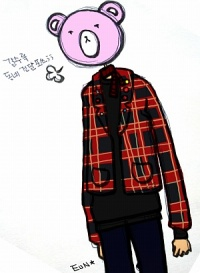
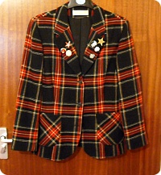
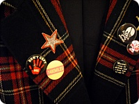
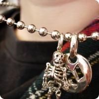
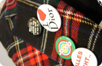
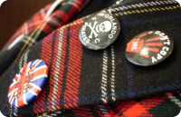
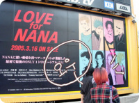
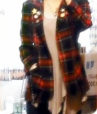

흠흠~ 신나게 현실도피중^^;;
이럴때가아닌데에에에~~~~~OTLOTL
요 위에 그림은 프란즈 라이브 티켓끊고나서 좋아라~그린건데
업로드가 엄청 늦었군용;; (프란즈 라이브후기는 요기에^^)
옷중에서 젤(?) 좋아라~하는게 자켓종류인데
헐렝한 상의에 자켓 청바지가 젤 편해요//헐헐
↑죠 위에 자켓은 2003년도 4월
그르니까;; 일본으로 떠나기 직전에 우연히 것도 중고로 구입한건데
정말 끈질기게 살아남고있습니다^^;;
처음에 구입한 계기도 자켓에 버튼달려있는게 너무 마음에 들어서
구입해서 꾸준히 버튼이나 브로치만 바꿔가믄서 입고있어요
구입한 비용보다 드라이크리닝 비라던가!! 브로치값이 더 들은 그런놈인데
(게다가 안감은 이제 슬슬 위험한 수준;;; - 넘 오래되어서;;)
비슷한걸 찾고싶어도 좀처럼 '이거닷!!'싶은게 안 나타나네용^^;;
첨에 영국와서 타탄체크라던가!! 펑크라던가!!!
이동네가 본고장이라서
왠 이상한 동양여자애가 저런걸 입고다닌다냐~라고 생각할까봐
(마이소심합니다;;녜;;;)
망설였었는데 의외로 학교칭구들도 이쁘다구 해주고
동네 슈퍼아주머니도 스코틀랜드 출신이신지;;어떤지;;
겁나게 좋아해주셨음;;; (마침 지갑도 저 자켓이랑 비슷한 타탄체크;;)
왼쪽 젤 위에 별모냥 브로치(??)는 앤디워홀 전시회보구
굿즈로 구입한거;; 무려 ￡3나 했음;;
이럴때가아닌데에에에~~~~~OTLOTL
요 위에 그림은 프란즈 라이브 티켓끊고나서 좋아라~그린건데
업로드가 엄청 늦었군용;; (프란즈 라이브후기는 요기에^^)
옷중에서 젤(?) 좋아라~하는게 자켓종류인데
헐렝한 상의에 자켓 청바지가 젤 편해요//헐헐
↑죠 위에 자켓은 2003년도 4월
그르니까;; 일본으로 떠나기 직전에 우연히 것도 중고로 구입한건데
정말 끈질기게 살아남고있습니다^^;;
처음에 구입한 계기도 자켓에 버튼달려있는게 너무 마음에 들어서
구입해서 꾸준히 버튼이나 브로치만 바꿔가믄서 입고있어요
구입한 비용보다 드라이크리닝 비라던가!! 브로치값이 더 들은 그런놈인데
(게다가 안감은 이제 슬슬 위험한 수준;;; - 넘 오래되어서;;)
비슷한걸 찾고싶어도 좀처럼 '이거닷!!'싶은게 안 나타나네용^^;;

체크체크~첨에 영국와서 타탄체크라던가!! 펑크라던가!!!
이동네가 본고장이라서
왠 이상한 동양여자애가 저런걸 입고다닌다냐~라고 생각할까봐
(마이소심합니다;;녜;;;)
망설였었는데 의외로 학교칭구들도 이쁘다구 해주고
동네 슈퍼아주머니도 스코틀랜드 출신이신지;;어떤지;;
겁나게 좋아해주셨음;;; (마침 지갑도 저 자켓이랑 비슷한 타탄체크;;)

요래요래 버튼만 그때그때 바꿔서^^왼쪽 젤 위에 별모냥 브로치(??)는 앤디워홀 전시회보구
굿즈로 구입한거;; 무려 ￡3나 했음;;



오다이바 대관람차 안
시부야 타워레코 앞
이때 아마 NANA12권 발매기념 이벤트 가는길
(이날 무려 치마도입었는데 사진이 없......;;)
↑이건 진짜 오래된 사진들 뻘건머리였을때의 나;;;
(뭐;; 음악좋아하고 아트계열에 있는사람이라면 대부분 한번쯤 거쳤을;;
머리에 물감들이기한동안 버닝했었었죠^^;;;;;)
이때 아마 NANA12권 발매기념 이벤트 가는길
(이날 무려 치마도입었는데 사진이 없......;;)
↑이건 진짜 오래된 사진들 뻘건머리였을때의 나;;;
(뭐;; 음악좋아하고 아트계열에 있는사람이라면 대부분 한번쯤 거쳤을;;
머리에 물감들이기한동안 버닝했었었죠^^;;;;;)

그리고 이게 가장 최근에 찍은사진^^
거의 7년째에 접어든 옷인데 아직도 자켓중 젤 이쁨받는 놈입니다//
비슷한걸루 한벌 더 있었음 좋겠어요 ㅜㅜ
거의 7년째에 접어든 옷인데 아직도 자켓중 젤 이쁨받는 놈입니다//
비슷한걸루 한벌 더 있었음 좋겠어요 ㅜㅜ